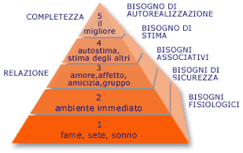

Stampa
Stampa- L'identità in Rete
- Storia delle Comunità online
- Dinamiche e ruoli nelle Comunità online
- Principi per la progettazione di Comunità Online
- Gli elementi di una Comunità online
- References
- Glossario
- notice
- Visitatori: quelli che non si identificano nella comunità in modo permanente.
- Novizi: nuovi membri che devono imparare a darsi da fare ed acquisire familiarità con la vita collettiva.
- Regolari: utenti ormai stabili che si sentono a proprio agio nella partecipazione.
- Leader: volontari, collaboratori e componenti dello staff, che si incaricano di far funzionare la comunità.
- Anziani: regolari e leader di vecchia data che condividono la conoscenza e tramandano la cultura locale.
- Accesso: accesso al sistema, possibilità di mantenere la propria identità e partecipare alla comunità Web
- Sicurezza: protezione da attacchi personali e intrusioni, sensazione di muoversi in ambito paritetico
- Sociale: appartenenza alla comunità nel suo insieme e a sottogruppi nel suo interno
- Autostima: capacità di contribuire alla crescita della comunità e di essere apprezzati sulla base di tali contributi
- Autorealizzazione: capacità di assumere un ruolo trainante nella comunità, che possa sfociare in nuove opportunità
Le comunità online non sono "virtuali"
Non sono "finzione" né "rappresentazione". Sono altrettanto reali di qualsiasi altra cosa che consideriamo realtà. Sono fatte di persone, in carne e ossa. con tutte le qualità e i difetti, i valori e le debolezze, l' utilità e la difficoltà di ogni comunità umana. Questo é evidente a chi ha pratica della rete. Ma se smettessimo di chiamarle "virtuali" forse anche il resto del mondo capirebbe un po' meglio di cosa si tratta.
da un messaggio nella mailing list mktg, giugno 2000
l'Identità in Rete
La concezione dello spazio e del tempo è stata profondamente modificata nel corso dell’ultimo secolo. Le innovazioni tecnologiche nella comunicazione a distanza hanno fatto in modo che la percezione si dilatasse consentendo di vedere, ascoltare cose lontane e passate, rendendo possibile la presenza simultanea, in momenti e luoghi differenti. Anche nell'ambito delle scienze naturali lo studio dello spazio e del tempo è messo in una luce differente: la fisica newtoniana alla base di tutto il pensiero filosofico dell'800 è stata ribaltata dalle intuizioni di Einstein con la teoria della relatività e da Heisenberg con il principio di indeterminazione. La materia e lo spazio secondo queste teorie non sono delle entità fisse e stabili, bensì delle configurazioni di energia. Lo spazio, entro i limiti delle nostre capacità sensoriali, può essere percepito e configurato; proprio in questo spazio da costruire più che da percepire si inseriscono le nuove tecnologie comunicative: il ciberspazio è uno di questi spazi mediatici costruiti dall'uomo.
Che cos'è il ciberspazio? È l'interconnessione fra tutti i computer del mondo. Sul piano fisico, questa interconnessione passa principalmente per la rete telefonica. Ora, l'interconnessione fisica fra le macchine implica, virtualmente, la messa in comune delle informazioni immagazzinate nelle loro memorie e il contatto fra tutti gli individui e i gruppi che si trovano davanti ai loro schermi. Per questo motivo il ciberspazio, lungi dall'essere soltanto una prodezza tecnica, è uno spazio di comunicazione dotato di caratteristiche radicalmente nuove. Internet in senso proprio si fonda su una norma di comunicazione che consente la collaborazione fra macchine e reti disparate. Percorrendo e trasformando progressivamente i canali telefonici, questa rete di reti non appartiene a nessuno, non ha un bilancio centrale né un direttore in carica. La sua organizzazione poggia sulla collaborazione fra tutti coloro che contribuiscono al suo uso e al suo mantenimento. Se è vero che la norma tecnica oggi in uso per Internet deriva da quella inventata negli anni Sessanta per le esigenze della ricerca militare americana, è bene sottolineare che la rete scaturisce dalla volontà operativa di centinaia di migliaia di utilizzatori, di ingegneri, di ricercatori, di docenti universitari, di studenti, di giovani del mondo intero, desiderosi di sperimentare nuove forme di comunicazione e che spesso hanno messo il proprio lavoro a disposizione gratuitamente per perfezionare la rete stessa. Per cui un vantaggio delle comunità virtuali rispetto a quelle reali, consiste nel poter essere fruite da punti molto lontani anche spazialmente.
Del "tempo virtuale" dell'era di Internet se ne occupa anche l'antropologo Michel Laguerre. Potrebbe sembrare strano, dice Laguerre, che si possa parlare di tempo "virtuale"; poichè il tempo è già di per se qualcosa di astratto. Come fa, dunque, a diventare "virtuale"? Il problema è legato al fatto che con la globalizzazione del mercato e con una società che sempre più diventa società di servizi, il ciclo tradizionale del tempo cui eravamo abituati viene radicalmente mutato, poiché aumenteranno sempre di più le attività e i servizi che si svilupperanno in un ciclo continuo di 24 ore. Il tempo di Internet si può misurare solo con l'orologio di Internet. Alla settimana "solare" ecco dunque affiancarsi e sovrapporsi la settimana "cyber" perchè potremo fare tutto a qualsiasi ora e perchè sarà scandita da ritmi estremamente elevati, rispetto a quelli tradizionali. Si pone allora il problema molto complesso di come gestire questo "nuovo" tempo e di come riorganizzare la temporalità.
Alluquère Rosanne Stone, che molto ha scritto sull'Identità in rete, si pone la questione: “Come vengono rappresentati i corpi attraverso la tecnologia? Come si costruisce il desiderio attraverso la rappresentazione? Qual è la relazione tra corpo e autoconsapevolezza? Che ruolo svolge il gioco in un paradigma emergente di interazione tra uomo e computer? E soprattutto cosa accade alla socialità e al desiderio sul finire dell’era meccanica?” Noi occidentali, questo è bene ribadirlo, siamo entrati nell’era virtuale e l’autrice si riferisce a ciò parlando del “progressivo cambiamento delle relazioni tra corpo e identità, tra individuo e gruppo ... perché nel mondo virtuale viene smentito il radicamento dell’interazione sociale nella fattualità fisica del corpo umano”. Ma se accettiamo l’idea che l’identità non sia qualcosa di dato per sempre ma un processo, ecco che le nuove configurazioni sociali ci spingono a dovere definire con nuovi strumenti e nuove visioni quel che noi siamo e sentiamo di essere.
È del 1984 la fantasia avvincente del ciberspazio immaginata e narrata da William Gibson in Neuromante. Se in questo primo romanzo Gibson manteneva cartesianamente 1:1 il rapporto identità reale/corpo fisico = identità virtuale/corpo virtuale, nei romanzi successivi l’identità o meglio la coscienza nel ciberspazio non ha più necessariamente una rappresentazione in un corpo virtuale. Oggi sappiamo che il ciberspazio esiste “come metafora delle tecnologie comunicazionali di fine secolo scorso, come banche dati, sistemi finanziari, reti informatiche e simulazioni militari...di conferenze via computer, di telefono erotico e di esperienze virtuali varie, ma poiché si tratta sempre di comunicare attraverso un media ad ampiezza di banda ristretta, quello che davvero facciamo è di negoziare le tensioni tra i soggetti individuali, collettività virtuali e i corpi fisici in cui tali individui e collettività possono essere collocati o meno”.
Il senso delle comunità virtuali è così sintetizzato da Stone: “I partecipanti alle comunità virtuali mediate elettronicamente acquistano
competenze utili per gli ambienti sociali virtuali che si stanno sviluppando nelle nazioni tecnologizzate alla fine del Ventesimo secolo.
I partecipanti imparano a delegare la funzione di agente a delle rappresentazioni dei loro corpi che esistono in spazi immaginali, accanto
ad altre rappresentazioni di altri individui.
http://www.fub.it/telema, Pierre Levy, l'intelligenza collettiva
http://www.technojuice.net, sulla noosfera
http://www.anarca-bolo.ch, recensione su Alluquère Rosanne Stone
http://www.provincia.venezia.it/medea/, Il Tempo al tempo di Internet
http://www.umanamente.com, comunità virtuali
http://www.psychomedia.it, Illusione gruppale nelle comunità virtuali
Storia delle Comunità Online
Definire cosa sia esattamente una comunità online non è semplice. Piuttosto che scegliere una definizione rigorosa sarà piuttosto il caso di aprire un orizzonte di senso sulla parola osservando come al suo interno riescano a convivere anche esperienze molto diverse.
Internet naque con il progetto 'Arpanet' intorno al 1967-68 per il Pentagono come uno strumento per favorire le comunicazioni in caso di attacco militare nucleare sovietico; si volevano eliminare i centri di comando e di controllo radiofonici perché erano facilmente individuabili dai missili nemici e si voleva creare una struttura di comunicazione che permettesse, qualora si fosse interrotta la comunicazione in un punto, di passare da un altra parte; qui nasce il concetto iniziale della rete: una struttura senza centro dove le informazioni passano, a caso, da una delle migliaia di possibili interconnessioni tra i punti; una struttura per il trasporto di informazioni, E' divertente scoprire che, immediatamente, nelle idee dei primi pionieri della rete, nasce la prima comunità virtuale che è una bacheca elettronica dove i ricercatori del progetto 'Arpanet' si scambiano opinioni su 'Star-trek' e sulla fantascienza. Immediatamente, questa utilizzazione della rete diventa molto più importante di quanto non fosse l'uso per cui la stavano progettando; anche in questo caso, originario, questa struttura che doveva servire al trasporto di informazioni, diventa un luogo dell'abitare telematico, un'estensione della nostra corporeità.
Una delle prime comunità online, tuttora "viventi" fu The Well, iniziata come una bacheca di messaggi, fondata da Stewart Bren e Larry Brilliant nel 1985. C'erano molte persone e tutte diverse tra loro: per lo più intellettuali, che non a caso adesso sono alla guida delle più importanti riviste o gruppi di tendenza on line. Gente libera che non si sottometteva alle regole o convinta che quelle regole andassero cambiate, gente molto legata agli ideali degli anni sessanta. La comunità e' stata il luogo ideale per incubare un gruppo libertario come la "electronic frontier foundation." Poi, dal 1994, The Well si sgancia dalle Bbs e sbarca in Internet grazie a Bruce Katz . Oggi e' considerata la più influente aggregazione virtuale, perché affronta argomenti tra i più disparati. Si è sviluppata enormemente e conta, oggi, più di settanta,ottantamila aderenti. Dentro questa comunità virtuale vi sono più di 270 conferenze: da conferenze dove ci si scambiano consigli sull'educazione dei figli ("Essere genitori") a piazze virtuali molto più serie sulle nuove tecnologie, oppure su questioni varie del sapere. Studiando 'Well', Rheingold è stato il primo che ha formulato l'idea che le comunità virtuali potessero rivoluzionare radicalmente le nostre relazioni e l'ordinamento sociale tradizionale; The well risponde ancora a quelle che sono le prerogative fondamentali di una comunità virtuale, in quanto riesce a dare ai suoi membri un vero e proprio senso di appartenenza.
Howard Rheingold, uno dei più noti studiosi al mondo dei fenomeni comunitari nati su Internet,
sosteneva che l'osservazione di questo tipo di fenomeni ci da costantemente il polso dello stato di salute della rete.
Un tempo la rete era una sola grande comunità,la comunità degli accademici e degli studiosi che sapevano usarla e che giorno
per giorno contribuivano a crearla. Il confluire di Interessi commerciali sul suo sviluppo ha enormemente allargato
le sue frontiere allo stesso tempo frazionando a dismisura quella compattezza iniziale.
Sul principio della comunità di interessi la rete ha avuto un grandissimo impulso produttivo:
appassionati di ogni campo dello scibile hanno trovato sul Web uno spazio adattissimo al reperimento e alla condivisione
delle informazioni raccolte; del resto la storia ci dice che il Web è nato al CERN di Ginevra proprio per questo.
Il primo mattone comunitario del Web è stato allora il fenomeno delle homepage.
Comunque il fatto di sapere che su qualche sito qualcuno costantemente si occupava di pubblicare ed aggiornare informazioni
di un certo tipo già di per sé costituiva il senso di una costruzione comunitaria.
I primi membri delle comunità virtuali vengono descritti da Rheingold come dei "giovani iconoclasti che avevano visto svanire
nel nulla la rivoluzione dell'LSD e fallire quella politica". Questi "iconoclasti" pensavano di costruire attraverso le reti
telematiche un luogo protetto, una sorta di riserva nella quale far regnare i valori della democrazia e della libertà. In pochi anni
quella riserva è divenuta uno spazio, un ciberspazio, un luogo virtuale disponibile ad accogliere grandi masse di persone.
Secondo Pierluigi Orlando, le piccole reti, le comunità virtuali, e tutti quegli spazi culturali di "aggregazione telematica" possono essere inquadrati come manifestazioni di un bisogno di identificazione in questo vasto e soprattutto dispersivo mondo virtuale.
http://www.cern.ch , All'origine del Web
http://www.well.org , La comunità online
http://www.rheingold.com , Howard Rheingold homepage
http://www.eff.org , Electronic Frontier Foundation editore
http://www.mediamente.rai.it , Intervista a Paolo Ferri
Dinamiche e Ruoli nelle Comunità Online
In che modo le comunità virtuali differiscono da quelle reali? Nella teoria sociologica classica per comunità si intendono tutte quelle relazioni che si basano sul rapporto madre-figlio, sul modello della comunità familiare; per società si intende, invece, l'insieme delle relazioni formali: il mercato, lo stato, le istituzioni,all'interno delle quali i rapporti non sono regolati da istanze di tipo affettivo-comunitario, ma da istanze di tipo formale e istituzionale.
Citando Hegel: "la società è la legge del giorno e la comunità è la legge della notte"; quest'ultima contiene in sé, dunque, una istanza più solidaristico-affettiva che formale. In realtà, questa distinzione classica tra comunità e società è stata criticata da alcuni teorici della filosofia contemporanea, come Jean Luc Nancy: egli sostiene che, in realtà, la distinzione tra comunità e società non è così netta ma, che anzi, non esiste; non si può dire che esista una comunità mitica, originaria, tutta buona e una società fredda, calcolistica e tutta cattiva; i due fenomeni si intersecano. Per quanto riguarda le comunità della rete, esse posseggono tutte e due le istanze: ci sono siti e comunità che sono di natura strettamente commerciale, oppure istituzionale, dove vi si partecipa in ragione di una funzione o di un ruolo. Ci sono, poi, comunità che si basano molto più su reti di affinità, su interessi comuni. Tra gli studiosi il dibattito sul concetto di comunità virtuale e sulla differenza tra comunità in senso tradizionale e comunità virtuale, si è sviluppato proprio su questo problema: quello della persistenza e della durata delle comunità virtuali;
Tomás Maldonado, sostiene che le comunità virtuali hanno delle caratteristiche di eccessiva fragilità; non reggono, per esempio il conflitto interno tra i membri, mentre nelle comunità reali, posizioni spesso diverse stanno dentro un unico contenitore. Altri sostengono che tale debolezza sia strutturale, sia intrinseca delle comunità virtuali, e sia un vantaggio, perché, cfr Turkle, questa debolezza, in realtà, permette di stabilire i vincoli comunitari non sulla base di rapporti di potere, ma sulla base di scelte libere basate su affinità di interessi; dunque, in questa prospettiva, tale debolezza si trasforma in un valore positivo. Sempre Maldonado si chiede:" Come si concilia l'idea di comunità virtuale, che si fonda sulla parzializzazione, con quella del villaggio globale, che mira invece all'universalizzazione? E in caso che il villaggio globale non sia altro, come qualcuno sostiene, che una comunità virtuale planetaria, come avviene il salto da un livello all'altro?" Negli ultimi tempi, sono stati molti i tentativi, da parte dei seguaci del ciberspazio, di definire la comunità virtuale, tuttavia tutti sono concordi nel definire il fatto che esse nascono a partire da interessi e gusti affini e quindi possano essere considerate comunità di simili. Di simili, non di identici. L'avvento delle reti telematiche ha reso possibile la comunicazione interattiva paritetica, da pari a pari (peer-to-peer), ma allo stesso tempo ha avuto effetti ambivalenti. Il "pari a pari",inteso in senso tecnico come un dispositivo che in un' architettura di rete opera allo stesso livello, ha assunto un senso non tecnico, come rapporto che si stabilisce tra utenti della rete culturalmente e socialmente pari.
Le comunità sono nate con la rete, spontaneamente attraverso meccanismi di aggregazione che spesso sono stati il risultato di determinate esigenze presenti già nella realtà. Alcune hanno vissuto e prosperato molte sono morte poco dopo il primo vagito. Tutte le comunità hanno un loro ciclo di vita e superata una certa soglia tendono progressivamente a spegnersi o a perdere la loro carica dinamica. Ci sono delle zone che temporaneamente aggregano delle esperienze e poi si dissolvono, dice Akim Bay, per fare posto ad altre. Ma una comunità, verrebbe da dire, nasce dalla condivisione di un interesse, un'esperienza, un obiettivo; in realtà l'unica cosa che viene condivisa è un'altra. Nelle comunità non si scambiano file ne' programmi in una comunità si condivide solo se' stessi. E' il cosiddetto self sharing. Questa definizione sembra particolarmente adatta a descrivere quello che avviene in quello che è diventato il luogo comunitario per eccellenza in rete: il chat.
Altra questione riguarda il linguaggio; é lecito quindi domandarsi da quale realtà linguistica traggano legittimità le "comunità in rete", in particolare quelle non specialistiche (che già posseggono un linguaggio in grado di stabilire confini per i profani). Parlarsi, scambiarsi informazioni e idee, presuppone un accordo preliminare su un vocabolario, su una sintassi, ma anche su una serie di referenti e di immagini del mondo.
http://www.mediamente.rai.it, Interviste su mediamente
http://www.fub.it/telema/, Quanto sono "vere" le comunità online?
http://www.provincia.venezia.it/medea/, Sherry Turkle, un'antropologa del cibersapzio
http://www.mediamente.rai.it, G. Gilder, editorialista e dirigente del Discovery Institute, spiega la sua visione sull'interattività uomo-computer
Il ciclo dell'aderente
Ami Jo Kim, ritiene che vi sono alcune transizioni che fanno parte di ogni comunità, anche reale, collegate ad esempio al comportamento sociale durante un trasloco in un
altro quartiere, anche online i nuovi arrivati si presentano con curiosità e domande inevase, ansiosi di essere accettati. I cittadini stabili si
occupano degli affari,indicono riunioni, si scambiano chiacchere e si si vedono con gli amici. I leader si fanno avanti per dare il benvenuto ai nuovi e per garantire
il corretto funzionamento dei vari sistemi. Infine quelli che vi risiedono da più tempo, gli anziani, raccontano storie, condividono conoscenze, trasmettono
la cultura locale. L'insieme di questi ruoli da forma al ciclo di vita dell'aderente, che a sua volta delinea gli stadi progressivi del coinvolgimento nella comunità.
Su Internet il tempo scorre assai rapidamente. Dinamiche sociali che richiedono mesi e anni per evolversi nel mondo fisico, sul Web
possono emergere nel giro di giorni, specialmente quando una comunità inizia suscitare interesse.
![[Online member cicle]](./img/ciclo.gif)
Principi per la progettazione di Comunità Online
Una comunità coerente, punta al raggiungimento di un obiettivo preciso nella vita dei partecipanti e risponde alle mete fondamentali stabilite dai fondatori, quindi indipendentemente dai motivi per i quali una comunità online possa vedere la luce, che si tratti di creare una nuova organizzazione sul Web oppure di ridefinirne una già esistente ogni partecipante si riterrà soddisfatto quando l'obiettivo di fondo viene definito con chiarezza. Definiti gli obiettivi iniziali, con la crescita e la maturazione della comunità, i vari membri possono e dovrebbero giocare un ruolo progressivamente più ampio nella realizzazione e nel mantenimento della cultura interna.
Ciascuna comunità può definirsi riuscita o meno, a seconda dell'idea di successo che hanno quanti creano, gestiscono e danno vita
a quel gruppo specifico. Un gruppo qualsiasi, può contare anche solo una dozzina di iscritti, che peraltro ritengono di aver
raggiunto il successo perché quell'esperienza risponde alle loro esigenze e aspettative; come d'altra parte un portale Web può essere in
grado di attrarre migliaia di membri e stimolare un robusto contesto sociale, pur essendo costretto a chiudere per non aver
raggiunto gli obiettivi fissati dagli sponsor.
Per poter esistere e avere senso, una comunità deve attrarre e mantenere un numero sufficiente di membri. deve garantire adeguati ritorni
economici o non profit a chiunque vi abbia investito per avviarla e mantenerla, é però importante essere chiari sulla natura dell'investimento
come pure sul tipo di ritorno che ci si aspetta. Nel caso in cui entrambi i requisiti non vengano rispettati, la comunità si avvierà alla sua chiusura.
Dal punto di vista del design, uno degli errori che si possono commettere, consiste nell'organizzare un megaprogetto iniziale e nell'operare pesanti investimenti in paradigmi di design o piattaforme tecnologiche che poi risulta difficile modificare e aggiornare. Quasi sempre le comunità durature e di successo partono con progetti ristretti, semplici e mirati per poi crescere in maniera organica con l'andar del tempo, ampliandosi in respiro, profondità e complessità come risposta alle mutevoli esigenze del tempo e alle diverse variabili ambientali.
I principali interrogativi da porsi in sede di progettazione per la formulazione degli obiettivi sono:
- quale tipo di comunità si vuole realizzare
- per quale motivo lo si sta facendo
- per chi? committente/utente
Occorrerà porsi questi quesiti con una certa periodicità, al ritmo delle mutevoli esigenze di utenti e proprietari.
Un buon punto di inizio, consiste nell'identificare le esigenze ancora insoddisfatte condivise dai membri della comunità
e del tutto specifiche.
Per meglio ponderare la questione, uno strumento molto utile a cui far riferimento potrebbe essere la scala di Maslow:
La teoria di Maslow spiega la motivazione in base alla soddisfazione sequenziale di alcuni bisogni tra loro in rapporto gerarchico:
fisiologici, di sicurezza, di appartenenza, di affetto e di stima, di autorealizzazione.
Secondo Maslow si potrà soddisfare il bisogno successivo solo dopo aver soddisfatto quello precendete, per quanto in alcuni aspetti
si tratti di uno schema riduttivo, la sua semplicità la rende sovente uno strumento efficace.
Ami Jo Kim, ne ha realizzato una tassonomia per l'utente online

http://www.naima.com/community , La pubblicazione di Ami Jo Kim
gli elementi di una Comunità Online
la realizzazione tecnica di una comunità online, ha esigenze dettate in particolare dal grado di interattività con gli utenti che si intende
fornire, quindi non é sufficiente offrire un sistema di contenuti organizzato staticamente:
bisogna essere in grado di riconoscere ed autenticare i membri, fornire accessi particolari agli amministratori, concedere diritti in scrittura a chi
utilizza forums e simili, dare permessi in upload, effettuare del content management in modo efficente; garantire la persistenza dei dati, evitare transazioni
non determinate e garantire un livello ragionevole di difesa da accessi e manipolazioni improprie.
Tutte cose che HTML, in quanto formato di presentazione, non é in grado di fare. In questo senso sono nate dapprima le diverse esecuzioni CGI, in Perl,
in Bash, oppure direttamente in codice binario, in grado di proporre form e quant'altro intermediando la pagina statica con il resto del sistema ed introducendo
non pochi problemi di sicurezza ed una fitta letteratura di exploit.
Le specifiche di HTML dinamico, ed in particolare l'introduzione di Java Script diedero qualche strumento di interazione in più, ma limitato alla parte client.
Dal lato server si fece, ancora oggi, largo uso di Perl per interfacciare pagine statiche con databases, applicativi di posta elettronica, tools di monitoraggio ecc.
Per quanto teoricamente ogni linguaggio di programmazione sia in grado di fornire interattività al Web,
oggi la maggior parte dei databases offre tools di interfacciamento con il Web, via ODBC o in maniera nativa, ed esistono linguaggi di scripting in grado
di interrogare questi databases ed i loro sistemi nonché di fornire output in HTML; si tratta di due linguaggi interpretati server-side: ASP (Active server Pages) per i webserver IIS di Microsoft, con una
sintassi derivata dal loro Visual Basic, ed il PHP (Hypertext Preprocessor), derivato da PHPFI da cui ha mantenuto il nome, con costrutti e sintassi provenienti
in maggioranza da ANSI C sviluppato nativamente per architetture LAMP.
Dal lato server molte sono anche le implementazioni JAVA con le 'java servelets', applicazioni Java che forniscono applets in output alle richieste utente.
Questi ambienti di sviluppo sono tutti 'cross-platform' cioè in linea di massima implementabili su ogni piattaforma (web server) Web, in pratica ognuno da il meglio di se
in ambiente nativo. Tuttavia non é raro vedere alcune comunità commerciali, oppure di lungo corso che implementano diverse tecnologie, secondo il
prodotto offerto.
Per sviluppare comunità da zero sono quindi necessarie conoscenze specifiche della piattaforma operativa su cui intende implementare il codice, conoscenze specifiche sugli User
Agent (browser) per cui si intende aprirsi, competenze nella realizzazione ed amministrazione di Databases, serie conoscenze di HTML nonché dello specifico
linguaggio di programmazione che si voglia utilizzare.
Oggi esistono però sia in ambiente commerciale che in ambiente GNU molti pacchetti già scritti e configurati allo scopo, ciò non esime però dalle necessarie
competenze di implementazione e gestione. Oppure affidare in outsourcing il progetto :-)
Oltre a queste offerte, in cambio spesso di pubblicità o di un modesto contributo, si possono 'assemblare' elementi diversi e provenienti da punti disparati,
quali forums, chat, mailing list ecc.
Architetture per comunità
LAMP
viene definita LAMP (Linux+Apache+MySql+PHP) un'architettura che comprende Sistema Operativo, Web Server, DataBase relazionale, modulo per il linguaggio
di scripting PHP. Particolarità di questo subset, é il fatto di poggiare su elementi molto versatili, piuttosto sicuri in ambiente di rete e di essere
tutti rilasciati con licenza GNU-GPL, il che significa che il soft così rilasciato può essere modificato, adattato, ridistribuito in maniera libera, con
l'unico obbligo di ridistribuire sorgenti e licenza se del caso. Su di essa moltissimi applicativi adatti a comunità online vengono sviluppati, migliorati
e mantenuti. La versatilità é tale per cui é possibile sviluppare in altri ambienti operativi con le proprie applicazioni preferite, p.es. win.x, mac, other unix
in accesso alla directory del webserver come se fosse una directory locale visualizzandone l'output da server sul proprio browser.
il limite maggiore é costituito dalla mancanza a tutt'oggi di IDE (integrated Developpement Environnement) in modo grafico per lo sviluppo di databases
e codice PHP, il che obbliga a lunghe sessioni di codifica manuale.
ASP
Active Server Pages é rapido e flessibile, l'utilizzo di questo linguaggio è però perlopiù confinato ai server Microsoft, come ad esempio IIS,
e non funziona quindi con tutti gli altri server che popolano il Web. Tuttavia, non è difficile vedere diversi provider che ne propongono
l'utilizzo. Grazie all'uso delle pagine ASP, l'utente può quindi creare dei documenti che possono fornire informazioni, rispondendo in modo
diverso alle differenti richieste dei navigatori.I vantaggi nell'utilizzo di questo linguaggio di scripting sono dati dal fatto che le pagine asp
sono completamente integrate con i file html, facili da creare e non necessitano di compilazione, sono orientate agli oggetti e usano componenti
server ActiveX.
http://www.linuxiso.org, Distro Linux
http://httpd.apache.org, Apache, web Server
http://www.mysql.org, MySql database relazionale
http://www.php.net, il linguaggio di scripting Server side
http://www.gnu.org, il progetto e le licenze GNU-GPL
http://www.aspitalia.com, ASP in italia
http://www.risorse.net, Comunità italiana per Webmasters, soprattutto ASP
I componenti di una comunità
Mailing Lists
Fra i luoghi di incontro online più semplici da creare e mantenere. La maggior parte dei MUA (Mail User Agent), consente il raggrupamento
di liste di indirizzi, tuttavia quelle basate su Internet consentono a tutta la comunità di condividerne la lista: tramite una soft in rete é possibile
creare ed aggiungere una lista di indirizzi ai quali viene recapitato in automatico ogni messaggio inviato sulla lista.
Le indicazioni maggiori per una mailing list, sono date p. es. dalla necessità di dare avvio ad una nuova comunità, oppure servirne una di piccole
dimensioni: la gente vi scambia informazioni, pone domande e risponde. Newsletter ed annunci vari sono altresì buoni motivi per l'utilizzo di una
mailing list come pure servire gli utenti nuovi arrivati, evitando loro problemi di interfaccia per reperire le informazioni iniziali, per quanto utilizzata
quasi sempre in combinazione ad altri strumenti di comunicazione, a piccoli gruppi con obiettivo comune potrebbe anche convenire l'impiego
quale unica struttura comunitaria. Bisogna però tener conto che la gestione degli archivi e la loro consultazione nel tempo pongono qualche problema pratico.
452 Multi Mail, Software LAMP-GPL per la gestione di una mailing list
http://www.topica.com, Servizio di mailing list gratuito
Listserv, un applicativo proprietario a pagamento
Forums
Altrimenti noti come bulletin board o bacheche elettroniche sono tra i più diffusi luoghi di incontro online, che al pari delle mailing lists
ricorrono alla modalità asincrona; grazie a tale caratteristica possono dar vita a conversazioni che si protraggono nel tempo. Svilppano un
contesto ed una storia in seno alla comunità.
Tipicamente si possono suddividere in due categorie: a tema laddove dato un tema si dipartono lateralmente ramificandosi i vari thread che lo
compongono, indicato soprattutto per le conversazioni domanda-risposta, oppure il sistema lineare, laddove ad ogni topics é possibile sviluppare un tema
separato in qualche modo riferito ad una voce generale. Per rapporto alle mailing list, i forums offrono una serie di opzioni aggiuntive, p.es la caratteristica
BBCode, l'uso di avatar, search engines ecc. che consentono maggiori potenzialità nella formazione di comunità Web. I forums, danno la sensazione di luogo
specifico, creando un legame tra persone geograficamente distanti ed incrementando il senso di appartenenza.
Iansoft OpenBB Community, Software LAMP-GPL per la realizzazione di un forum
http://www.ezboard.com, Servizio Forum gratuito
Encore Web Forum, un applicativo proprietario a pagamento
Chat
Una grande quantità di persone frequenta chat su Internet per lavorare, giocare, litigare, flirtare o divertirsi. Il software per chat in tempo
reale consente a chiunque sia collegato al sistema di corrispondere immediatamente con ogni altro partecipante in modalità sincrona, contrapposta
a quella asincrona, grazie alla quale persone residenti in località lontante possono comunicare nello stesso istante.
Luoghi di incontro di questo tipo si rivelano importanti in ambiti diversi, dalle questioni pratiche alle situazioni divertenti. Vi si può
tenere un corso, gestire gruppi di supporto e riunioni di lavoro; esse forniscono il senso della presenza e dell'immediatezza, funzionano bene
per eventi prefissati, possono offrire guida e assistenza in tempo reale.
MWChat, Software LAMP-GPL per la realizzazione di una Chat
http://www.talkcity.com, Servizio Chat gratuito
Chat Blazer, Chat proprietaria a pagamento, richiede Java
News e contents management
Un altro strumento importante per le comunità online, é dato dai sistemi di gestione del contenuto: news riguardanti la comunità o settori
di interesse ben precisi, contenitori strutturati di documentazione, solitamente in upload e download, moderati da uno o più 'anziani'.
Questi strumenti consentono di regola l'editing dei contenuti online, la gestione delle immagini e diversi formati di dati. Sono per lo più
associati ad altri elementi come quelli precedentemente descritti. Fornisce un 'taglio' ad una comunità, rendendo immediato il senso della
tale o tal altra comunità. Permette ai membri di contribuire evidenziando specifiche conoscenze, consente un layout univoco alle pubblicazioni
della comunità.
http://phpweblog.org, Software LAMP-GPL per la gestione di articoli
http://www.freesticky.com, hosting gratuito per news management ed altro
Article Manager, content manager proprietario a pagamento basato su perl
Indice delle referenze consultate e proposte
Alcune comunità in rete
http://www.well.com, Una delle prime comunità online, 1985.
http://www.habbohotel.com, La metafora della città in 3D
http://freshmeat.net, La piazza dell'Open Source
http://sourceforge.net, Accesso a strumenti per CVS, mailing list, gestione bug, aree di discussione, gestione attività, pubblicazione su Web,
archiviazione permanente dei file, backup completi, e amministrazione totalmente via Web.
http://www.blackboard.com, Comunità, in parte ad uso gratuito completa degli strumenti
per l'organizzazione di corsi Online.
http://www.technojuice.net/aleg/, una piccola comunità di lavoro, che presenta già
i problemi di quelle grandi :-)
Strumenti per la costruzione di comunità
Pacchetti già pronti
http://www.phpnuke.org, Ormai maturata nell'offerta e stabilità, é personalizzabile
http://developer.ez.no, Ez publish, semplice e pulita
http://phpwebsite.appstate.edu, Una buona integrazione dei diversi strumenti
http://yerba.sourceforge.net, Ancora giovane, ma molto agile, non del tutto automatizzata.
Hosting LAMP gratuito
http://www.f2s.com , Completo di tutto, ma lento!
http://freephp.digiro.net, completo, mostra banner pubblicitari per hosting gratuito.
http://www.spaceports.com, buono, mostra banner
http://www.dk3.com, ben servito, chiaro mostra popup
http://www.webhosts4free.com, collettore di risorse gratuite
http://www.freesql.org, solo hosting MySql
http://flattext.com/global/fr, possibilità di creare DB MySql in linea
Software LAMP (Unix,Win, OSX)
http://www.linuxiso.org, tutte le distribuzioni linux offrono già un'architettura LAMP integrata
http://www.manucorp.com, EasyPHP, pacchetto prefigurato per win32 comprendente Apache+PHP+Mysql
http://www.nusphere.com, Altro pacchetto completo per tutte le piattaforme operatives
http://tecfa.unige.ch, Ottima introduzione a MySQL
http://www.php.net, I tutorials PHP in diverse lingue
http://www.linuxvalley.com, Introduzione a MySql in italiano.
http://www.html.it/apache, Introduzione al web server Apache, in Italiano.
Strumenti gratuiti in rete ed assemblabili
http://network54.com, Forum e Chat personabilizzabili, in cambio di un banner pubblicitario.
http://www.m4d.com, Altro Forum funzionale ed altri strumenti
http://www.multicity.com, chat, forum, messangers.. molto ben fatti, dal gratuito ai 50$ mensili.
Nota:
Le risorse ad utilizzo gratuito presentate, in particolare servizi Hosting ed 'autocostruzioni casalinghe', sono ottime per la comprensione tecnica
delle potenzialità ed i limiti di quanto proposto. Una implementazione professionale con gli stessi strumenti, esige qualcosa di più nell'ambito
dell' amministrazione di sistema.
bibliografia
Critica della ragione informatica, Tomás Maldonado, ed. Feltrinelli, Milano 1997.
Tomás Maldonado è professore ordinario di Progettazione Ambientale al Politecnico di Milano. l'impressionante bibliografia del testo, offre numerosi
spunti di approfondimento anche in merito alle comunità virtuali.
Desiderio e Tecnologia, Alluquère Rosanne Stone, ed. Feltrinelli, Milano 1997.
Il problema dell'Identità nell'era di Internet,Alluquère Rosanne Stone dirige l'Interactive Multimedia Laboratory (ACTlab) dell'Università di Austin nel Texas;
ha contribuito tra l'altro alla definizione, come campo disciplinare antropologico, degli studi sui transgender
Costruire comunità WEB, Ami Jo Kim, ed. Apogeo, Milano 2000.
Ami jo Kim, proveniente da Sun Microsystems,insegna progettazione per il Web alla Stanford University, California, ha costruito ambienti online per clienti
come Adobe, eBay, Yahoo. Un testo utile a chi si ccupa di Web Project Management soprattutto per la comprensione delle comunità virtuali in fase di progettazione.
Web Usability, Jakob Nielsen, ed. Apogeo, Milano 2000.
Jakob Nielsen, anch'egli proveniente da Sun Microsystems, consulente WEB di successo, viene ritenuto uno dei massimi teorici dell'usabilità.
Le sue osservazioni, a tratti forse dogmatiche, vanno però sicuramente a beneficio della progettazione di comunità online.
The Hacker Crackdown, Bruce Sterling, ed. Electronic Frontier Foundation, 1992.
Bruce Sterling, con William Gibson, é capostipite del genere letterario definito CyberPunk. Il testo pubblicato online, riporta i fatti e gli antefatti
riguardanti il primo intervento di polizia su grande scala, avvenuto nel '91, nei confronti di cracking ed hacking telematico. Per fare ciò, Sterling ripercorre
le tracce che hanno portato alla formazione delle prime "comunità virtuali" ancora prima dell'avvento di massa di Internet.
Comunità virtuali, Howard Rheingold, ed. Sperling & Kupfer, 1994.
Parlare, incontrarsi, vivere nel ciberspazio, a Rheingold viene attribuito il merito di essere stato il primo ad aver riflettuto in maniera
sistematica sulla natura delle comunità virtuali, studiando in particolare "The Well", una delle prime comunità virtuali americane, nata nel 1985.
Release 2.0, Esther Dyson, ed. Mondadori, Milano 1997.
Nata a Zurigo, figlia del noto fisico Freeman, é consulente aziendale definita da "Vanity Fair" una delle 50 persone più influenti nel mondo della New
Economy. Nella introduzione online, descrive alcuni meccanismi di funzionamento comunitari.
L'Intelligenza collettiva, Pierre Lévy, ed. Feltrinelli, Milano 1995.
Le nuove tecnologie permettono una sinergia delle conoscenze, e aiutano a creare un'intelligenza collettiva. Esse consentono la messa in relazione
di soggetti nomadi, le cui conoscenze non sono più definite da contesti accademici, ma derivano dalla somma delle più diverse esperienze individuali,
le quali formano la materia prima per nuovi prototipi mentali, adeguati alla nuova fase della civilizzazione umana.
Virtual Light, William Gibson, ed. Bantam Books,1994.
Una metafora della "formazione comunitaria" e altre "profezie"
Il Tao della Fisica, Fritjof Capra, ed. gli Adelphi, Roma 1982.
Per una comprensione del Tempo e dello Spazio secondo le teorie della relatività con un interessante paragone attraverso le filosofie orientali.
Glossario
AVATAR: Alter ego elettronico, attore digitale (termine preso a prestito dall'induismo), se utilizzato in rete indica l'aspetto e l'identità
assunta nei giochi o nelle chat grafiche e tridimensionali; un avatar non è detto sia antropomorfo:
può essere qualsiasi tipo di oggetto che si ritiene rappresentativo del proprio ruolo o caratteristica.
ASP: Active Server Pages. Una pagina asp e' un file di testo con l'estensione .asp contenente codice HTML, piu' un linguaggio di scripting
(Vbscript tipicamente). Le pagine asp sono state "create" da Microsoft per poter gestire una comunicazione client - server e poter sviluppare
pagine attive, cioe' il cui contenuto e' calcolato con una runtime. Le pagine ASP facilitano l'interfacciamento di un sito con un database o
con oggetti COM (Component Object Model).
BBS: Acronimo di Bulletin Board System, oggi in via di estinzione, i BBS negli anni '70, '80 e primi anni '90 erano macchine sulle quali veniva
installato un software di condivisione accessibile via modem. È proprio sui BBS, e non sull’Internet, che hanno inizio i percorsi di riflessione
culturale e tecnologica sulle conseguenze della "rivoluzione digitale".
Linguaggio C: uno dei piu' diffusi linguaggi di programmazione che combina istruzioni di alto livello con controllo di macchina a basso livello.
Sviluppato da Dennis M.Ritchie e Brian W.Kernighan nel 1972 come modifica del linguaggio B di Ken Thompson. Originariamente è stato progettato
sul sistema operativo Unix. Ritchie e' stato co-designer anche di questo sistema operativo.
CGI: Common Gateway Interface, interfaccia di collegamento comune.
È una specifica per il collegamento di applicazioni server-side con il Web.
FAQ: "Frequently Asked Questions" o domande più frequenti; Internet é piena di questi file chiamati FAQ ed il loro scopo
é quello di avvicinare gli ultimi arrivati ad una conoscenza generale dell'argomento. Le FAQ si possono trovare anche sui News Group!.
GNU: Si tratta di software di sistema compatibile unix sviluppato dalla Free Software Foundation. Il gioco di parole per
l'acronimo e' "GNU's Not Unix" infatti accanto a tale sigla c'e' l'immagine di uno gnu. L'intento della fondazione e' quello di produrre software
freeware modificabile o redistribuibile ma non a scopo di lucro. Linux ad esempio si basa sul software GNU. Il progetto GNU e' nato nel 1984
da Richard Stallman al MIT.
GPL: General Public License, si tratta di una licenza per i diritti di autore ("General Public License") portata dallo GNU EMACS e da
svariato altro software della "Free Software Foundation" che garantisce i diritti di riutilizzo e di riproduzione del prodotto
(generalmente fornito assieme al suo codice).
IDE: Integrated Development Environment, indiica un programma atto a facilitare lo sviluppo di software; l'esempio piu' semplice consiste
in un editor di testo che oltre a permette la stesura del codice (in un certo linguaggio) da la possibilita' di compilarlo e di effettuarne
il debugging.
IRC: Internet Relay Chat, protocollo chat nato nel 1988 e si basa sul concetto di server/client e diviso in canali come i newsgroup
MUD: Multi-User Dungeon, i giochi di ruolo multiutente,Originariamente esso era nato come
versione telematica multiutente del popolare gioco di ruolo Dungeons & Dragons
ODBC: Open DataBase Connectivity. Standard sviluppato verso la fine degli anni ottanta da Microsoft e
IBM per lo scambio dei dati tra database diversi.
PHP: Hypertext Preprocessor, linguaggio interpretato (script language) utile per la realizzazione di pagine web dinamiche, la cui sintassi deriva dal C,
dal Perl e da Java. E' un linguaggio server-side, ossia il codice viene eseguito su un server PHP il quale successivamente invia i risultati
al browser. I tag PHP non sono interpretabili direttamente dal browser ma solo su server remoto
copyleft
Questo lavoro di ricerca, é stato effettuato a partire da materiale presente in Rete; quindi frutto del lavoro e della conoscenza
che in molti hanno reso disponibile. Per questo e per altri motivi, ma soprattutto per questo, ognuno si senta libero di fare con il materiale proposto,
ciò che meglio crede.
Questa ricerca, svolta nell'ambito di un corso per Web Project Manager presso ISPFP, mira a raccogliere la sparsa documentazione
esistente sulle "virtual community".
L' autore incoraggia chiunque a proporre correzioni, segnalazioni ed estensioni a quanto esposto.
november 2001, Guido Venturini
<guido at technojuice dot com>